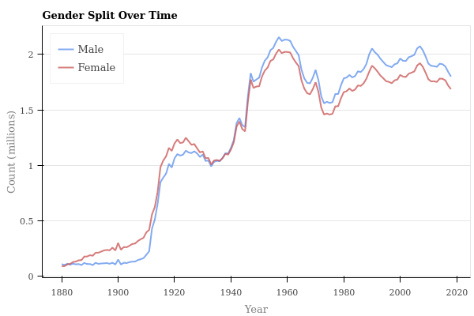
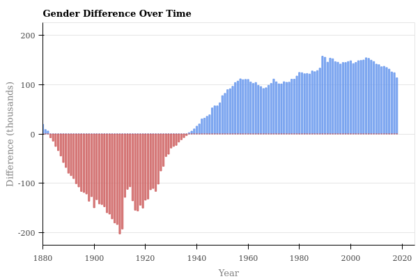
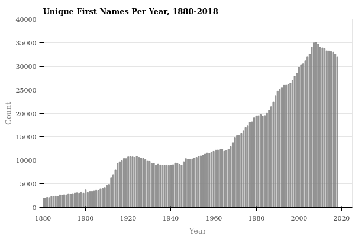
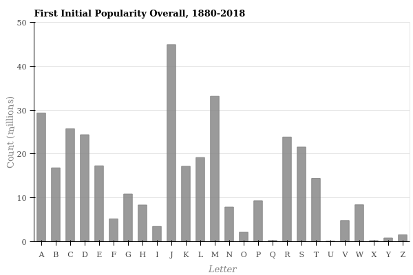

Exploring US Name Popularity, 1880-2018
Overview#
The focus of this project is to utilize data from the U.S. Social Security Adminisration to get some hands on practice using Pandas, Numpy and Bokeh while exploring first name popularity over the past 140 years.
The Data#
The data set comes coutesy of the SSA is split up into one file per year spanning 1880-2018 (you can read more about it and access it here). Each file includes the relative frequency of first names for U.S. births over the specified time frame. Each data file includes a list of records in the format of “name,sex,number,” with the “number” corresponding to the number of occurences of the name & gender combination for the given year. The data is formatted nicely (sorted by sex, then count), so there isn’t really much cleaning to do and there shouldn’t be any missing values. Here’s a quick sample from the first file:
Mary,F,7065
Anna,F,2604
Emma,F,2003
...
You may be wondering… is this an exhaustive set of names over that time period? In short, the answer is ‘No’. For starters, names with fewer than 5 occurrences for a given year are excluded from the list to protect privacy. In addition, only names that are between 2-15 characters are included and sorry Prince… symbols are not allowed. (And yes, I do know Prince’s birth name is Prince Rogers Nelson, so cool your jets people.)
If you are interested in more background info, try these pages out:
- Background - https://www.ssa.gov/oact/babynames/background.html
- Main Baby Names Page for SSA - https://www.ssa.gov/oact/babynames/index.html (includes some nice interactive functionality to play with the data (limited to the top 1000 names for each year)
Exploratory Questions#
In this notebook, I’ll primarily be using Pandas and Numpy for data manipulation and analysis and Bokeh for visualizations. Starting out, I’m seeking to answer the following questions:
- What are the most popular names of all time - overall and split by gender? And which names are popular for both males and females (i.e., gender neutral names)?
- What’s the most popular male and female name for each decade?
- Which names consistently rank the highest? And how does this compare to overall popularity?
- Which letters of the alphabet get the most love when it comes to first initials, overall and by decade?
That seems like enough for now… we’ll see if any other interesting ideas pop up along the way. To get started, we’ll need to read in the data, so let’s do that now.
#hide
# Import libraries
import pandas as pd
import numpy as np
from bokeh.plotting import figure, show
from bokeh.io import output_notebook, export_png
from bokeh.palettes import Spectral6
from bokeh.resources import INLINE
#from bokeh.models import ColumnDataSource, HoverTool
# Setup Bokeh to output directly to the notebook
output_notebook(resources=INLINE, verbose=False, hide_banner=True, load_timeout=5000, notebook_type='jupyter')
Import the Data#
To start, let’s import a single data file to see what we’re working with. Based on the above, we know each data file only has 3 columns - name, gender and number. There are no headers in the data, so we’ll have to create those as part of creating the dataframe.
Create the Initial Dataframe#
# Create column headers and read in the first file for 1880
cols = ["name", "gender", "year_count"]
names = pd.read_csv("data/yob1880.txt", names=cols)
# Preview what the data looks like
print(names.shape)
print(sum(names.year_count))
names.head()
(2000, 3)
201484
| name | gender | year_count | |
|---|---|---|---|
| 0 | Mary | F | 7065 |
| 1 | Anna | F | 2604 |
| 2 | Emma | F | 2003 |
| 3 | Elizabeth | F | 1939 |
| 4 | Minnie | F | 1746 |
So in our initial file, we have 2000 total rows and our data looks as expected. In order to combine the files from all years into a single dataframe, we’ll need to add a column for the year so we can keep things straight.
# Add a new column for year
year = 1880
names['year'] = year
names.head()
| name | gender | year_count | year | |
|---|---|---|---|---|
| 0 | Mary | F | 7065 | 1880 |
| 1 | Anna | F | 2604 | 1880 |
| 2 | Emma | F | 2003 | 1880 |
| 3 | Elizabeth | F | 1939 | 1880 |
| 4 | Minnie | F | 1746 | 1880 |
Read in the Rest of the Data#
Now that we have an initial dataframe ready to go, let’s read in the rest of the files and add them to our dataset for analysis. We’ll have to account for the new column for year as we go, which we can get from the file name itself.
# Concatenate all remaining files into our dataframe
# Set column headers
cols = ["name", "gender", "year_count"]
# Loop through files and append to dataframe (starting with 1881)
for i in range(1881,2019,1):
filename = str("data/yob" + str(i) + ".txt")
temp_df = pd.read_csv(filename, names=cols)
temp_df["year"] = i
names = pd.concat([names, temp_df], ignore_index=True) # Reset the index
# Preview the shape of the updated dataframe
print(names.shape)
print(sum(names.year_count))
names.tail()
(1957046, 4)
351653025
| name | gender | year_count | year | |
|---|---|---|---|---|
| 1957041 | Zylas | M | 5 | 2018 |
| 1957042 | Zyran | M | 5 | 2018 |
| 1957043 | Zyrie | M | 5 | 2018 |
| 1957044 | Zyron | M | 5 | 2018 |
| 1957045 | Zzyzx | M | 5 | 2018 |
After combining all the files into one, we can see that we now have nearly 2 million rows and a total count of over 350 million which represents the number of unique names accounted for in the data. And that last name looks pretty interesting… Zzyzx. If you want to learn more (I did), you can take a look here, or here. Moving on…
Data Analysis#
Next, let’s do some analysis on our data to answer some of those burning questions we listed out above. Keep in mind, this isn’t an exhaustive record containing the names of every U.S. citizen from 1880-2018. That said, as we saw above, it does account for quite a few people. So it should be enough to help us spot some interesting trends.
Let’s start our analysis with some basics - things like gender split, most popular names (male, female, combined), etc. Before we do that though, let’s do a quick check to ensure we don’t have any missing values.
Check for Missing Values#
names.isna().sum()
name 0
gender 0
year_count 0
year 0
dtype: int64
OK, looks like we’re good to move forward. Next, let’s check out the gender split.
Gender Split - Total#
First, let’s look at the total gender split to see what that turns up. To do the work, we’ll use the pivot_table function to get the view we’re after - setting the index to gender and the values to year_count.
# Determine the split between Males and Females in the data
names.pivot_table(index="gender",values=["year_count"],aggfunc=sum)
| year_count | |
|---|---|
| gender | |
| F | 174079232 |
| M | 177573793 |
Gender Split - Over Time#
Looks like a pretty even split in the overall numbers. Before we move forward, let’s take a look at the split between male and female records for each year to see if we can spot any trends over time.
First though, let’s create a helper function to assist with plotting.
# Function to display a plot in Bokeh
def createPlot(plot_type, title, x_values, y_values, x_label, y_label, colors,
filename, x_range=None, y_range=None, legend_labels=None, legend_location=None):
"""Creates and returns a line or vbar plot using bokeh as specified
"""
# Create the figure
output_notebook(resources=INLINE, verbose=False, hide_banner=True,
load_timeout=5000, notebook_type='jupyter')
p = figure(plot_width=600, plot_height=400, toolbar_location=None, tools="")
p.background_fill_color = "white"
p.background_fill_alpha = 0.3
# Style the figure
p.title.text=title
p.title.text_color="black"
p.title.text_font="helvetica"
p.title.text_font_style="bold"
p.xaxis.minor_tick_line_color=None
p.yaxis.minor_tick_line_color=None
p.xgrid.grid_line_color = None
p.xaxis.axis_label=x_label
p.xaxis.axis_label_text_color="gray"
p.xaxis.axis_label_text_font="helvetica"
p.xaxis.axis_label_text_font_style="normal"
p.yaxis.axis_label=y_label
p.yaxis.axis_label_text_color="gray"
p.yaxis.axis_label_text_font="helvetica"
p.yaxis.axis_label_text_font_style="normal"
if plot_type == 'line':
# Create a line for each set of y_values
for i in range(len(y_values)):
p.line(x_values, y_values[i], color=colors[i], line_width=2, alpha=0.8,
legend_label=legend_labels[i])
# Add legend
p.legend.location = legend_location
elif plot_type == 'vbar':
# Configure axis range
p.x_range.start = x_range[0]
p.x_range.end = x_range[-1]
p.y_range.start = y_range[0]
p.y_range.end = y_range[1]
# Create a bar for each set of y_values
for i in range(len(y_values)):
p.vbar(x=x_values, top=y_values[i], width=0.6, color=colors[i], alpha=0.8)
# Export png and display plot
export_png(p, filename=filename)
show(p)
# Create list of distinct years for x values
x_values = names['year'].unique().tolist()
# Create y values as the sum of the count for each year, grouped by gender
y_male = names[names['gender']=='M'].groupby(['year', 'gender']).year_count.sum() / 1000000
y_female = names[names['gender']=='F'].groupby(['year', 'gender']).year_count.sum() / 1000000
y_values = [y_male, y_female]
# Assign other variables
plot_type = 'line'
title = "Gender Split Over Time"
x_label = "Year"
y_label = "Count (millions)"
x_range = (1880, 2025)
y_range = (0, 2.25)
colors = ["cornflowerblue", "indianred"]
filename = './figures/gender_split_line.png'
legend_labels = ["Male", "Female"]
legend_location = "top_left"
createPlot(plot_type, title, x_values, y_values, x_label, y_label, colors,
filename, x_range, y_range, legend_labels, legend_location)

Interesting… the two lines mirror each other in terms of shape almost perfectly. We can also see that women outnumbered men for most of the first 60 years with the number of men then overtaking women starting around 1950.
Let’s take a look at the difference in gender numbers over time before we move on to name popularity. First, we’ll create a series for the difference between male and female numbers of the years and then we’ll plot it out.
# Add a chart plotting the difference in men and women yoy
# Calculate the difference for each year
male_count = names[names['gender']=='M'].groupby(['year', 'gender']).year_count.sum()
female_count = names[names['gender']=='F'].groupby(['year', 'gender']).year_count.sum()
gender_gaps = []
for i in range(len(male_count)):
gender_gap = (male_count[i] - female_count[i]) / 1000
gender_gaps.append(gender_gap)
# Create lists of values for males and females relative to a difference of 0
list_length = len(gender_gaps)
more_males = [0] * list_length
more_females = [0] * list_length
for n in range(len(gender_gaps)):
if gender_gaps[n] > 0:
more_males[n] = gender_gaps[n]
elif gender_gaps[n] < 0:
more_females[n] = gender_gaps[n]
else:
continue
# x values are the series of unique years
x_values = names['year'].unique().tolist()
# y values are the values for males and females relative to a difference of 0
y_values = [more_males, more_females]
# Assign other variables
plot_type = 'vbar'
title = "Gender Difference Over Time"
x_label = "Year"
y_label = "Difference (thousands)"
colors = ["cornflowerblue", "indianred"]
filename = './figures/gender_split_bar.png'
x_range = (1880, 2025)
y_range = (-225, 225)
# Create plot using function
createPlot(plot_type, title, x_values, y_values, x_label, y_label, colors, filename, x_range, y_range)

The plot above provides a nice visual highlighting the difference in the number of social security number applications for males vs. females over time. It would be interesting to see if and how the trends above are reflected in actual birth statistics. For now we will leave this as a potential next step though and move on to look at name popularity
Most Popular Names - Overall#
For name popularity, we’ll first look at which names are most popular over time for each gender. We can use the Pandas.pivot_table() function again to achieve this result.
# Create a pivot table view for the top 10 names based on total count
names.pivot_table(index=["name", "gender"], values="year_count", aggfunc=sum).\
sort_values("year_count", ascending=False).head(11).reset_index().shift()[1:]
| name | gender | year_count | |
|---|---|---|---|
| 1 | James | M | 5164280.0 |
| 2 | John | M | 5124817.0 |
| 3 | Robert | M | 4820129.0 |
| 4 | Michael | M | 4362731.0 |
| 5 | Mary | F | 4125675.0 |
| 6 | William | M | 4117369.0 |
| 7 | David | M | 3621322.0 |
| 8 | Joseph | M | 2613304.0 |
| 9 | Richard | M | 2565301.0 |
| 10 | Charles | M | 2392779.0 |
Looks like male names dominate the list of overall popularity (with the exception of Mary). Not sure exactly what that says about male names… maybe they tend to be more traditional, or maybe it’s a more frequent occurence that male names are passed down between generations. In any case, we should split this out by gender next so we can see the separate lists.
Most Popular Names - By Gender#
First, let’s create a new dataframe to make this a bit easier. We can use Pandas.copy() to make a deep copy of our initial dataframe and then we can collapse the year_count for each name & gender combo.
# Create a copy of the dataframe, drop the year column & rename year_count to total_count
names_copy = names.copy(deep=True)
names_copy = names_copy.drop(columns='year', axis=1)
names_copy = names_copy.rename(columns={'name': 'name', 'gender': 'gender', 'year_count': 'total_count'})
# Collapse the data by name and gender and sum up the year_count column
names_copy = names_copy.groupby(['name', 'gender'], as_index=False)\
.agg({'total_count': 'sum'}).reindex(columns=names_copy.columns)
Top 10 Male Names - All Time
# Filter the new dataframe by gender and sort by year_count
# Top 10 male names based on total count
names_copy[names_copy["gender"]=="M"].sort_values("total_count", ascending=False,
ignore_index=True).head(11).shift()[1:]
| name | gender | total_count | decade | letter | |
|---|---|---|---|---|---|
| 1 | James | M | 5164280.0 | NaN | NaN |
| 2 | John | M | 5124817.0 | NaN | NaN |
| 3 | Robert | M | 4820129.0 | NaN | NaN |
| 4 | Michael | M | 4362731.0 | NaN | NaN |
| 5 | William | M | 4117369.0 | NaN | NaN |
| 6 | David | M | 3621322.0 | NaN | NaN |
| 7 | Joseph | M | 2613304.0 | NaN | NaN |
| 8 | Richard | M | 2565301.0 | NaN | NaN |
| 9 | Charles | M | 2392779.0 | NaN | NaN |
| 10 | Thomas | M | 2311849.0 | NaN | NaN |
Top 10 Female Names - All Time
# Top 10 female names based on total count
names_copy[names_copy["gender"]=="F"].sort_values("total_count", ascending=False,
ignore_index=True).head(11).shift()[1:]
| name | gender | total_count | decade | letter | |
|---|---|---|---|---|---|
| 1 | Mary | F | 4125675.0 | NaN | NaN |
| 2 | Elizabeth | F | 1638349.0 | NaN | NaN |
| 3 | Patricia | F | 1572016.0 | NaN | NaN |
| 4 | Jennifer | F | 1467207.0 | NaN | NaN |
| 5 | Linda | F | 1452668.0 | NaN | NaN |
| 6 | Barbara | F | 1434397.0 | NaN | NaN |
| 7 | Margaret | F | 1248985.0 | NaN | NaN |
| 8 | Susan | F | 1121703.0 | NaN | NaN |
| 9 | Dorothy | F | 1107635.0 | NaN | NaN |
| 10 | Sarah | F | 1077746.0 | NaN | NaN |
Popular Gender Neutral Names#
There’s nothing too surprising in the above lists. Let’s dig a little deeper and see if we can figure out the most common gender neutral names. In other words, names that are relatively common for both males and females. We can start by looking at the total count for names that appear at least once for each gender and see what that looks like. I suspect it won’t give us exactly what we’re after, but let’s give it a try.
To do this analysis, first we’ll isolate the list of unique names for each gender into separate Numpy ndarrays and then we’ll use Numpy.intersect1d() to find the interesection of the two arrays. Once we have the intersection, we can use it to filter our dataframe to the gender neutral names
# Isolate the unique male names & view the total
male_names = names_copy[names_copy['gender'] == 'M'].name.unique()
print("Number of male names: " + str(len(male_names)))
# Isolate the unique female names & view the total
female_names = names_copy[names_copy['gender'] == 'F'].name.unique()
print("Number of female names: " + str(len(female_names)))
# Find the intersection of the two arrays & view the total
gn_names = np.intersect1d(male_names, female_names)
print("Number of gender neutral names: " + str(len(gn_names)))
Number of male names: 41475
Number of female names: 67698
Number of gender neutral names: 10773
# Top 10 gender neutral names based on total count
names_copy[names_copy.name.isin(gn_names)]\
.pivot_table(index="name", values="total_count", aggfunc=sum).\
sort_values("total_count", ascending=False).reset_index().head(11).shift()[1:]
| name | total_count | |
|---|---|---|
| 1 | James | 5187679.0 |
| 2 | John | 5146508.0 |
| 3 | Robert | 4840228.0 |
| 4 | Michael | 4384463.0 |
| 5 | Mary | 4140840.0 |
| 6 | William | 4133327.0 |
| 7 | David | 3634229.0 |
| 8 | Joseph | 2623958.0 |
| 9 | Richard | 2574832.0 |
| 10 | Charles | 2405197.0 |
Clearly, this result is unexpected as none of the names in the above list is a common gender neutral name. In fact, if your keeping score at home, you’ll notice this list looks suspiciously similar to the list of the most popular names overall. I suspect the result is skewed for names that have a disproportionately high number for one gender and a much smaller number for the other. We can confirm this to be the case by looking at the numbers for one of the names and checking the count for each gender.
# Create a list of the top10 names from the list above
top10_count = names_copy[names_copy.name.isin(gn_names)].\
pivot_table(index="name", values="total_count", aggfunc=sum).\
sort_values("total_count", ascending=False).head(10)
top10_names = top10_count.index
top10_names
Index(['James', 'John', 'Robert', 'Michael', 'Mary', 'William', 'David',
'Joseph', 'Richard', 'Charles'],
dtype='object', name='name')
# Use the list to filter out the counts of these names for each gender
names_copy[names_copy.name.isin(top10_names)]\
.pivot_table(index=["name","gender"], values="total_count").\
sort_values(["name","gender"]).head(20)
| total_count | ||
|---|---|---|
| name | gender | |
| Charles | F | 12418 |
| M | 2392779 | |
| David | F | 12907 |
| M | 3621322 | |
| James | F | 23399 |
| M | 5164280 | |
| John | F | 21691 |
| M | 5124817 | |
| Joseph | F | 10654 |
| M | 2613304 | |
| Mary | F | 4125675 |
| M | 15165 | |
| Michael | F | 21732 |
| M | 4362731 | |
| Richard | F | 9531 |
| M | 2565301 | |
| Robert | F | 20099 |
| M | 4820129 | |
| William | F | 15958 |
| M | 4117369 |
As suspected, each name in the list has a disproportionately high count for one gender and a fairly small count for the other. In order to find a more representative list, we’ll have to do some more clean up. Let’s start by creating a new df with the gender neutral names and then filtering it to a threshold count for each gender. Then, we can revisit the top 10 list to see if we get a different result.
# Get count of rows before filtering
print("Rows before: " + str(names_copy.shape[0]))
# Filter names_copy df down to only gender neutral names
names_copy = names_copy[names_copy.name.isin(gn_names)]
# Filter out rows below threshold
threshold = 30000
names_copy = names_copy[names_copy.total_count > threshold]
# Get the list of names where both M and F rows still exist
seen = []
gn_names = []
for name in names_copy.name:
if name not in seen:
seen.append(name)
else:
gn_names.append(name)
# Filter df to gn names
names_copy = names_copy[names_copy.name.isin(gn_names)]
# Get count of rows after filtering
print("Rows after: " + str(names_copy.shape[0]))
Rows before: 109173
Rows after: 70
# And now, pivot and display the top 10 based on total count
names_copy.pivot_table(index="name", values="total_count", aggfunc=sum).\
sort_values("total_count", ascending=False).reset_index().\
head(11).shift()[1:]
| name | total_count | |
|---|---|---|
| 1 | Willie | 595102.0 |
| 2 | Kelly | 553154.0 |
| 3 | Terry | 519811.0 |
| 4 | Jordan | 505517.0 |
| 5 | Taylor | 430836.0 |
| 6 | Alexis | 401937.0 |
| 7 | Leslie | 379807.0 |
| 8 | Jamie | 353733.0 |
| 9 | Shannon | 347023.0 |
| 10 | Shawn | 335706.0 |
This looks a little bit more reasonable for a list of gender neutral names and we could always adjust the threshold to dial it in a bit more if necessary.
Unique Names Per Year#
Before we move on to looking at name popularity by decade, let’s take a quick diversion to look at the number of unique names per year. Are we getting more creative with names as the years go by, or are we staying roughly the same.
To drill into this, first we’ll need to isolate the list of unique names for each year and then plot the results.
# Filter df down to name and year
total_unique = names.loc[:, ('name', 'year')]
# Add a new column to track overall count
total_unique['count'] = 1
# Group by year and sum the count of unique names in that year
total_unique = total_unique.loc[:, ('year', 'count')].groupby(['year']).\
agg({'count': 'sum'}).reset_index()
# Make the plot
# Create list of distinct years for x values
x_values = total_unique['year'].tolist()
# Create y values as the sum of the count for each year, grouped by gender
y_values = total_unique['count'].tolist()
# Create remaining variables for plot
plot_type = 'vbar'
title = "Unique First Names Per Year, 1880-2018"
x_label = "Year"
y_label = "Count"
filename = './figures/unique_names_by_year.png'
colors = ["gray"]
x_range = (1880, 2025)
y_range = (0, 40000)
# Create plot using function
createPlot(plot_type, title, x_values, [y_values], x_label, y_label,
colors, filename, x_range, y_range)

Overall, it appears we are getting much more creative with our baby names over time. There is an interesting jump around 1920 and then a slight dropoff around 1930, but otherwise it looks to be a pretty steady trend upwards from 1880 until 2018. It’s worth keeping in mind though that our data only includes names with a count of 5 or higher for the given year. So it’s possible that the actual upward trajectory is even more dramatic if we assume a substantial increase in names falling into this category over time.
Most Popular Names by Decade#
Next, let’s take a look at the most popular male and female names by decade. In order to accomplish this, we’ll work through the following steps:
- Create a function to generate the decade from the year for each row
- Apply the function to the df to populate the new “decade” column
- Collapse the data by decade to get the total count per decade for each name
- Clean up our interim df
- Filter the df by sorting on decade, gender & decade count and displaying the max decade count for each grouping
# Create function to return decade for a given year
def decadeColumn(year):
"""Returns 4 digit decade when passed 4 digit year"""
year = str(year)
decade = int(year) - int(year[3])
return decade
# Create new column for decade and populate with function
names["decade"] = names.year.apply(decadeColumn)
# Collapse the data by decade, name and gender and sum up the year_count column
decade_names = names.groupby(['decade', 'name', 'gender'], as_index=False)\
.agg({'year_count': 'sum'}).reindex(columns=names.columns)
# Clean up df cols - drop, reorder, rename
decade_names = decade_names.drop('year', axis=1)\
.reindex(columns=['decade', 'gender', 'name', 'year_count']).rename(columns={'year_count': 'decade_count'})
# Filter the df to most popular male and female names by decade
decade_popular_names = decade_names.sort_values(['decade','gender','decade_count'])\
.groupby(['decade','gender']).tail(1)
decade_popular_names = decade_popular_names.reset_index(drop=True)
decade_popular_names
| decade | gender | name | decade_count | |
|---|---|---|---|---|
| 0 | 1880 | F | Mary | 91668 |
| 1 | 1880 | M | John | 89950 |
| 2 | 1890 | F | Mary | 131136 |
| 3 | 1890 | M | John | 80665 |
| 4 | 1900 | F | Mary | 161505 |
| 5 | 1900 | M | John | 84593 |
| 6 | 1910 | F | Mary | 478639 |
| 7 | 1910 | M | John | 376318 |
| 8 | 1920 | F | Mary | 701754 |
| 9 | 1920 | M | Robert | 576364 |
| 10 | 1930 | F | Mary | 572956 |
| 11 | 1930 | M | Robert | 590734 |
| 12 | 1940 | F | Mary | 640031 |
| 13 | 1940 | M | James | 795680 |
| 14 | 1950 | F | Mary | 625568 |
| 15 | 1950 | M | James | 843531 |
| 16 | 1960 | F | Lisa | 496976 |
| 17 | 1960 | M | Michael | 833217 |
| 18 | 1970 | F | Jennifer | 581763 |
| 19 | 1970 | M | Michael | 707647 |
| 20 | 1980 | F | Jessica | 469487 |
| 21 | 1980 | M | Michael | 663742 |
| 22 | 1990 | F | Jessica | 303094 |
| 23 | 1990 | M | Michael | 462327 |
| 24 | 2000 | F | Emily | 223690 |
| 25 | 2000 | M | Jacob | 273844 |
| 26 | 2010 | F | Emma | 177410 |
| 27 | 2010 | M | Noah | 163657 |
For the most part, this list is not too surprising based on our lists of overall popularity by gender. It is interesting to see that some variation starts appearing in the more recent decades and especially since 2000.
Most Consistent Highly Ranked Names#
Next up, let’s take a look at the names that are the most consisently popular over the years. There are a few different ways we could look at this…
- Most consistently in the top ten per year/decade
- Highest rank on average per year/decade
For the sake of simplicity, let’s start by looking at the highest ranking names on average for each year and then based on that we can decide next steps.
# Calculate top 10 male names of all time based on average per year
names[names["gender"]=="M"].groupby(['name', 'gender']).agg({'year_count': 'mean'})\
.astype(int).sort_values("year_count", ascending=False).reset_index().head(11).shift()[1:]
| name | gender | year_count | |
|---|---|---|---|
| 1 | James | M | 37153.0 |
| 2 | John | M | 36869.0 |
| 3 | Robert | M | 34677.0 |
| 4 | Michael | M | 31386.0 |
| 5 | William | M | 29621.0 |
| 6 | David | M | 26052.0 |
| 7 | Joseph | M | 18800.0 |
| 8 | Richard | M | 18455.0 |
| 9 | Charles | M | 17214.0 |
| 10 | Thomas | M | 16632.0 |
# Calculate top 10 male names of all time based on average per decade
decade_names[decade_names["gender"]=="M"].groupby(['name', 'gender']).agg({'decade_count': 'mean'})\
.astype(int).sort_values("decade_count", ascending=False).reset_index().head(11).shift()[1:]
| name | gender | decade_count | |
|---|---|---|---|
| 1 | James | M | 368877.0 |
| 2 | John | M | 366058.0 |
| 3 | Robert | M | 344294.0 |
| 4 | Michael | M | 311623.0 |
| 5 | William | M | 294097.0 |
| 6 | David | M | 258665.0 |
| 7 | Joseph | M | 186664.0 |
| 8 | Richard | M | 183235.0 |
| 9 | Charles | M | 170912.0 |
| 10 | Thomas | M | 165132.0 |
# Calculate top 10 female names of all time based on average per year
names[names["gender"]=="F"].groupby(['name', 'gender']).agg({'year_count': 'mean'})\
.astype(int).sort_values("year_count", ascending=False).reset_index().head(11).shift()[1:]
| name | gender | year_count | |
|---|---|---|---|
| 1 | Mary | F | 29681.0 |
| 2 | Jennifer | F | 14526.0 |
| 3 | Elizabeth | F | 11786.0 |
| 4 | Patricia | F | 11644.0 |
| 5 | Ashley | F | 10576.0 |
| 6 | Linda | F | 10450.0 |
| 7 | Barbara | F | 10319.0 |
| 8 | Kimberly | F | 9730.0 |
| 9 | Madison | F | 9519.0 |
| 10 | Margaret | F | 8985.0 |
# Calculate top 10 female names of all time based on average per decade
decade_names[decade_names["gender"]=="F"].groupby(['name', 'gender']).agg({'decade_count': 'mean'})\
.astype(int).sort_values("decade_count", ascending=False).reset_index().head(11).shift()[1:]
| name | gender | decade_count | |
|---|---|---|---|
| 1 | Mary | F | 294691.0 |
| 2 | Jennifer | F | 133382.0 |
| 3 | Elizabeth | F | 117024.0 |
| 4 | Patricia | F | 112286.0 |
| 5 | Linda | F | 103762.0 |
| 6 | Barbara | F | 102456.0 |
| 7 | Kimberly | F | 92985.0 |
| 8 | Margaret | F | 89213.0 |
| 9 | Ashley | F | 84612.0 |
| 10 | Susan | F | 80121.0 |
Results Name Popularity Over Time
Let’s take a look at the results for name popularity over time. It’s a bit easier to see it when it’s all in one place.
For male names, there is literally no difference in the lists when comparing overall popularity (i.e, total count) with highest average counts per year and decade.
For female names, there is a bit more variation, but overall the lists are pretty consistent. When it comes to the masses, I guess we aren’t very creative with our name choices.
| MALE | # | Overall | Avg by Year | Avg by Dec | FEMALE | # | Overall | Avg by Year | Avg by Dec |
|---|---|---|---|---|---|---|---|---|---|
| 1 | James | James | James | 1 | Mary | Mary | Mary | ||
| 2 | John | John | John | 2 | Elizabeth | Jennifer | Jennifer | ||
| 3 | Robert | Robert | Robert | 3 | Patricia | Elizabeth | Elizabeth | ||
| 4 | Michael | Michael | Michael | 4 | Jennifer | Patricia | Patricia | ||
| 5 | William | William | William | 5 | Linda | Ashley | Linda | ||
| 6 | David | David | David | 6 | Barbara | Linda | Barbara | ||
| 7 | Joseph | Joseph | Joseph | 7 | Margaret | Barbara | Kimberly | ||
| 8 | Richard | Richard | Richard | 8 | Susan | Kimberly | Margaret | ||
| 9 | Charles | Charles | Charles | 9 | Dorothy | Madison | Ashley | ||
| 10 | Thomas | Thomas | Thomas | 10 | Sarah | Margaret | Susan |
Most Popular First Initial, Overall#
Finally, let’s go back to our original dataframe and see if we can figure out the most popular first initial by gender and also combined.
# Create a simple function to get the first letter of each name
def getFirstLetter(string):
"""Function to return first letter of a string
"""
return string[0]
# Apply function to dataframe to get first letter for each name
names["letter"] = names.name.apply(getFirstLetter)
names.head()
| name | gender | year_count | year | decade | letter | |
|---|---|---|---|---|---|---|
| 0 | Mary | F | 7065 | 1880 | 1880 | M |
| 1 | Anna | F | 2604 | 1880 | 1880 | A |
| 2 | Emma | F | 2003 | 1880 | 1880 | E |
| 3 | Elizabeth | F | 1939 | 1880 | 1880 | E |
| 4 | Minnie | F | 1746 | 1880 | 1880 | M |
# x values are the unique letters
x_values = names['letter'].unique().tolist()
x_values.sort()
# y values are the sum of the count for each letter
y_values = round((names.groupby(['letter']).year_count.sum() / 1000000), 2).to_list()
# Create remaining variables for plot
plot_type = 'vbar'
title = "First Initial Popularity Overall, 1880-2018"
x_label = "Letter"
y_label = "Count (millions)"
colors = ["gray"]
filename = './figures/first_initial_pop_bar.png'
x_range = x_values
y_range = (0, 50)
# Create plot using function
createVBarPlot(plot_type, title, x_values, [y_values], x_label, y_label,
colors, filename, x_range, y_range)
